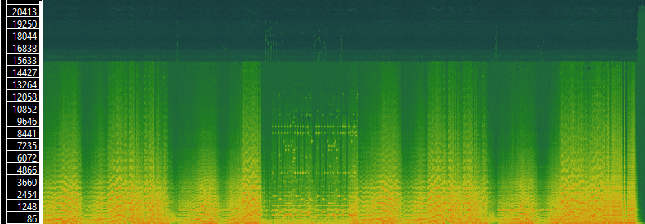
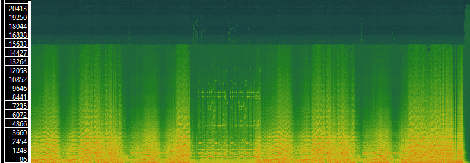

| Title | Minute Waltz | Sleeping Beauty | The Blue Danube |
|---|---|---|---|
| Artist | Gaylord Carter | Leopold Stokowski: New Philharmonic Orchestra | Vienna Philharmonic Orchestra |
| Composer | Frederic Chopin | Peter Ilyich Tchaikovsky | Johann Strauss |
| Copyright info | Not protected | Not protected | Not protected |
| Genre | Classical, waltz | Classical, waltz | Classical, waltz |
| Source | Internet Archive | Internet Archive | Internet Archive |
| File/audio format | VLC.mp3 | VLC.mp3 | VLC.mp3 |
| Number of channels | 2 | 2 | 1 |
| Sample rate | 48000 | 44100 | 44100 |
| Bits per second | 197kbps | 160kbps | 87kbps |
| Duration | 02:34 | 03:27 | 09:00 |
Data for Minute Waltz
Data for Sleeping Beauty
 

Data for The Blue Danube